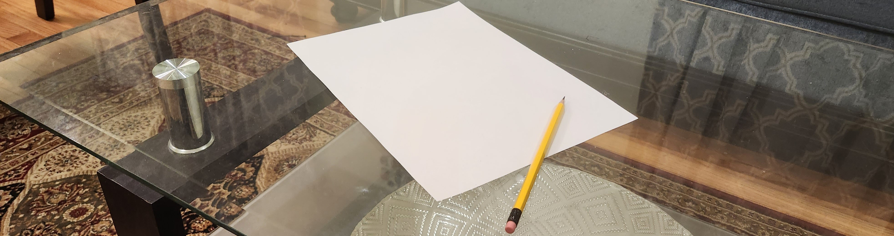

Reflections

Why did you decide to take grade 10 media arts?
I chose to take Grade 10 Media Arts because I wanted to fulfill my art credit requirement while also pursuing a subject I enjoy. Having previously learned photoshop, I believed Media Arts would be a great opportunity to use those skills. Despite being in Grade 9, I chose this class intended for Grade 10s as it was the best option for my grade's arts selection.
At first I was nervous about choosing a Grade 10 course, however my siblings reassured me and I decided to give it a try. My sister had taken Media Arts in high school and I remembered watching her work with Adobe Illustrator in class, which looked like a lot of fun and I wanted to experience it for myself. Although I definitely wouldn't consider myself an artist, I have always had a passion for trying different computer programs such as photoshop, illustrator, and various audio editing softwares. This made Media Arts the perfect class for me to explore my interests and improve my skills. - October 8, 2022
What are some challenges you might encounter and how will you
overcome them this semester?
There are multiple units within this course which I don't have much experience in such as photography and animation. While this will be a time for me to learn new things, it could also be a challenge. I've tried photography before but I wasn't able to get good shots often. I also have no idea how animation is made but am eager to learn more about it.
I’m also a bit nervous in general as last year in grade 8 I performed very badly in art, I failed many assignments. Though I’m hoping I’ll make a comeback this year. This year I’ll definitely spend more time working on each assignment and I’ll make sure not to procrastinate like I usually do. I’ll also listen closely to each instruction my teacher gives to make sure I don’t miss out on anything. I’ll put in more effort this time around to improve my skills and hopefully overcome my previous struggles in art class. -October 8, 2022
What skills do you have to bring to this class?
I have experience in photo editing software, particularly Adobe Photoshop and Illustrator. Additionally, I am also experienced with audio editing software such as Audacity and Adobe Audition. Before high school, I actively participated in clubs where I created posters using my design skills. Along with that, I have also edited videos for school assignments using Adobe Premiere Pro and WeVideo. -October 9, 2022
What new skills do you plan to learn from this class?
In this class, I plan to learn about the elements and principles of design to study the design of media arts. I'm also eager to learn animation skills and make motion graphics as I've never done that before. Additionally, I am excited to learn new photography techniques for which I could use when taking everyday pictures with my phone. I'm also excited to enhance my photoshop and illustrator skills, I believe I'll see great improvements by the end of the semester. - November 26, 2022
End of Semester Reflection
This course went way more well than I initially expected. I learned many things, even things in programs I thought I was experienced in, such as photoshop. I also learned about the elements and principles of art and the history of photography. I had much fun with each assignment and spent my time doing each to the best of my ability. The AGO trip was the highlight of the school year.
I usually am not too fond of art class, but I can confidently say this was the best art course I’ve ever had. At the beginning of the course, I thought I wasn’t capable of art skills, but this semester changed my mindset. My teacher was great and was always willing to help me when I needed it. I am now more confident in my abilities and have a greater appreciation for art. This experience has been very beneficial for me and has opened up a new perspective.
I'd also like to thank Ms.Nejatbakhsh for teaching us. She was always willing to go the extra mile to help us understand the material and I really appreciated her dedication to her students. I had a great time learning in this course, and I am grateful for the knowledge and skills I gained. I will definitely be using them in the future. -January 26, 2023